Достижимая неэксклюзивными
средствами разрешающая
способность (порог чувствительности)
магнитометров с анизотропными магниторезистивными датчиками
1. Введение
Серийно выпускаемые датчики с анизотропным магниторезистивным эффектом (АМР-датчики, AMR-sensors) [4], имеют неплохие характеристики и могут применяться при конструировании различных магнитометрических приборов [11], в частности, для измерения слабых магнитных полей, сопоставимых с магнитным полем Земли [7, 14 - 16]. В этой связи возникает вопрос - какой разрешающей способности можно добиться при проведении измерений магнитометрами с этими датчиками на фоне магнитного поля Земли или, как вариант, оценить порог чувствительности магнитных измерений в зонах магнитного вакуума, например, в комнатах с пассивной магнитной экранировкой или внутри активных магнитостатических экранов - компенсирующих внешнее поле многомерных систем катушек [13], используя обычные электронные схемы, рекомендуемые производителем [4], или их неэкспрессивные модификации.
2. Оценка достижимого порога чувствительности и разрешающей способности
2.1. Методика измерений
Оценка разрешающей способности и порога чувствительности произведена с использованием готовых прототипов изготавливаемых мелкими сериями магнитоизмерительных приборов [7, 14 - 16], в щупах которых используются анизотропные магниторезистивные датчики. При измерении щуп с датчиком фиксировался неподвижно по отношению к поверхности Земли. Измерения проводились в магнитно-штилевых пространственных зонах, т. е. в местах достаточно удаленных от крупных ферромагнитных объектов, мощного электрооборудования и электросетей, чтобы исключить магнитные наводки (в основном квазистатические и низкочастотные), причем в некоторых случаях щупы с датчиками помещались в заземленные электромагнитные экраны, чтобы снизить переменно-частотные магнитные и электромагнитные наводки, если это, конечно, позволяли условия проведения экспериментов. Для оценки разрешающей способности производилась серия Nmax последовательных измерений, затем рассчитывалось среднеквадратичное отклонение S в зависимости от числа произведенных измерений N (2 ≤ N ≤ Nmax). Эта зависимость при условии температурно-временной стабильности датчика и стабильности окружающей магнитной обстановки имеет, как правило, тенденцию сходится к определенному значению, которое и можно считать разрешающей способностью, а также порогом чувствительности прибора и, в довольно значительной степени, используемого в нем датчика. Среднеквадратичное отклонение S рассчитывалось по формуле [6]:
где N - число измерений (отсчетов) в выборке из серии, xi - i-й отсчет, x - среднее значение для N отсчетов.
2.2. Датчик HMC1022
Двухканальный со взаимно ортогональными измерительными каналами магниторезистивный датчик HMC1022 применен в микротесламетре [14] (рис. 2.2.1) и пешеходном магнитометре-градиентометре [16] (рис. 2.2.5). Датчик имеет паспортную разрешающую способность 85 мкГс = 8.5 нТл [4], хотя температурная стабильность его магниторезистивного моста оставляет желать лучшего. Поэтому в вышеупомянутых приборах использована компенсационная схема измерения магнитного поля с помощью специально предназначенной для этого структуры микросхемы датчика (фактически, планарной катушки индуктивности - offset strap), создающей сдвигающее магнитное поле, и его магниторезистивным мостом в качестве нуль-детектора [3]. Несмотря на неоднородность компенсационного магнитного поля, создаваемого цепью сдвига offset strap, данная схема измерений позволяет свести весьма немалую температурную погрешность магниторезистивного моста, к тому же имеющую значительный разброс для разных датчиков даже из одной партии, к существенно (более, чем на порядок) меньшей и повторяемой от датчика к датчику погрешности вышеупомянутой структуры [5]. Еще одним преимуществом компенсационной схемы является подавление перекрестной помехи, вызываемой перпендикулярной по отношению к измеряемой составляющей магнитной индукции, т. к. измерения, сводимые к измерению тока через цепь offset strap, производятся при близком к нулю магнитном поле в зоне измерительного магниторезистивного моста. Приборы имеют внешний выход со своего электронного преобразователя с коэффициентом преобразования 1 мВ/мкТл (в магнитометре-градиентометре [16] таких выходов несколько - по магнитной индукции и по градиенту, кроме того, имеется дополнительный канал по градиенту с десятикратным усилением). К этому выходу подключается внешний вольтметр APPA-107 с заявленной точностью измерений постоянного напряжения на уровне 0.06 %, разрешением до 1 мкВ и с возможностью записи до 6000 отсчетов с интервалом 0.5 с или более. Щуп с датчиком микротесламетра помещался в электромагнитный заземленный вместе с корпусом прибора экран (рис. 2.2.1) и при проведении измерений ориентировался в магнитном поле Земли в горизонтальной плоскости в одном из двух положениях: либо приблизительно с востока на запад (компонента магнитной индукции ближе к нулю), либо примерно с севера на юг (компонента магнитной индукции ближе к 20 мкТл). Снималась серия 100 ... 110 отсчетов. Отсчеты записывались в файл. Затем эти данные обрабатывались программно с целью получения усредненных значений и среднеквадратичных отклонений в зависимости от количества отсчетов, начиная с первого. Результаты измерений для цифрового микротесламетра [14] представлены на рис. 2.2.2 - 2.2.4.
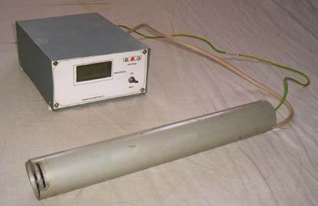
Рис. 2.2.1. Цифровой микротесламетр с датчиком HMC1022 [14]. Щуп помещен в заземленный электромагнитный экран.
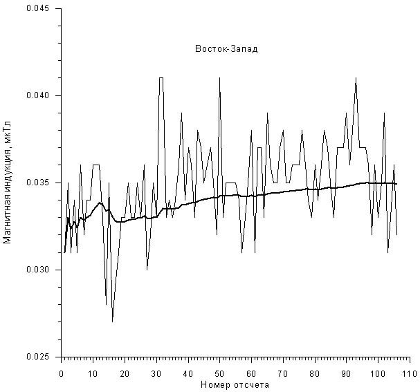
Рис. 2.2.2. Серия измерений магнитной индукции микротесламетром с магниторезистивным датчиком HMC1022 [14] при ориентации магниточувствительной оси щупа в направлении примерно восток-запад. Величина шума от пика до пика примерно 15 нТл. Девиация среднего значения с увеличением числа проведенных отсчетов составляет примерно 4 нТл.

Рис. 2.2.3. Серия измерений магнитной индукции микротесламетром с магниторезистивным датчиком HMC1022 [14] при ориентации магниточувствительной оси щупа в направлении примерно север-юг. Величина шума от пика до пика примерно 15 нТл. Девиация среднего значения с увеличением числа проведенных отсчетов составляет примерно 10 нТл.
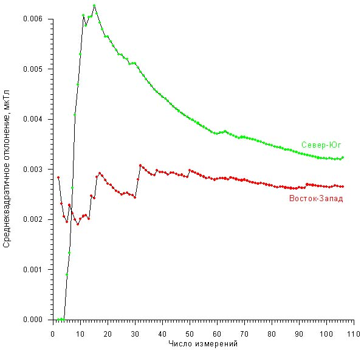
Рис. 2.2.4. Зависимость среднеквадратичного отклонения отсчетов микротесламетра с магниторезистивным датчиком HMC1022 [14] от числа проведенных измерений при разной ориентации щупа.
Магнитометр-градиентометр [16] (рис. 2.2.5) построен на основе тех же принципов и схемных решений, что и вышеупомянутый микротесламетр, поэтому интерес представляла разрешающая способность разностных каналов измерения (градиент магнитной индукции), в том числе после дополнительного десятикратного аппаратного усиления. В магнитометре-градиентометре датчики расположены в штанге, которая является электромагнитным экраном, поэтому дополнительное экранирование не проводилось. Штанга с датчиками была ориентирована в горизонтальной плоскости таким образом, что магнитное поле Земли по отношению к датчику имело максимальную компоненту направлении магниточувствительной оси B датчиков (вдоль длинной оси штанги) и минимальную - в направлении перпендикулярной ей оси A. Ось A датчиков ориентирована примерно в направлении восток-запад, компонента магнитной индукции ближе к нулю, ось B - примерно в направлении север-юг, компонента магнитной индукции ближе к 20 мкТл. К выходам разностных каналов прибора подключался вольтметр APPA-107N. Серия составляла где-то 100 отсчетов, временной интервал между отсчетами 0.5 с. Отсчеты записывались в файл. Затем эти данные обрабатывались программно с целью получения усредненных значений и среднеквадратичных отклонений в зависимости от количества отсчетов, начиная с первого. Результаты представлены на рис. 2.2.6 - 2.2.10.
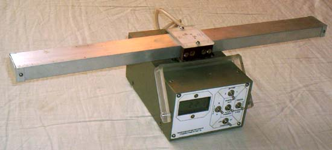
Рис. 2.2.5. Цифровой магнитометр-градиентометр с датчиками HMC1022 [16]. Датчики расположены на концах экранированной штанги.
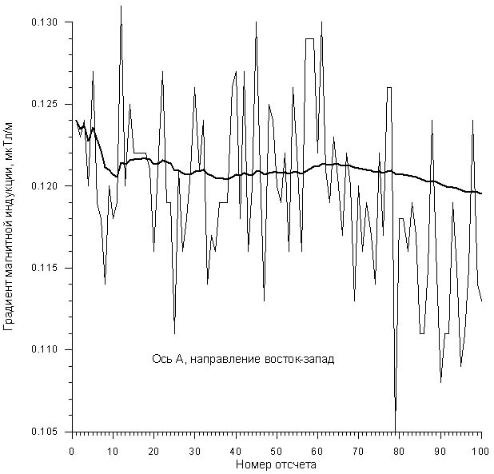
Рис. 2.2.6. Серия измерений градиента магнитной индукции магнитометром-градиентометром с магниторезистивными датчиками HMC1022 [16] при ориентации магниточувствительной оси щупа A в направлении примерно восток-запад. Величина шума от пика до пика примерно 25 нТл. Девиация среднего значения с увеличением числа проведенных отсчетов составляет примерно 4 нТл/м.
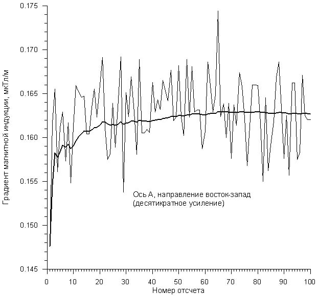
Рис. 2.2.7. Серия измерений градиента магнитной индукции магнитометром-градиентометром с магниторезистивными датчиками HMC1022 [16] при ориентации магниточувствительной оси щупа A в направлении примерно восток-запад (усиление в 10 раз). Величина шума от пика до пика примерно 25 нТл. Девиация среднего значения с увеличением числа проведенных отсчетов составляет примерно 15 нТл/м.
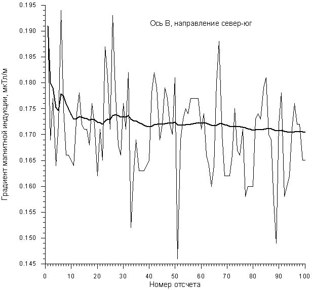
Рис. 2.2.8. Серия измерений градиента магнитной индукции магнитометром-градиентометром с магниторезистивными датчиками HMC1022 [16] при ориентации магниточувствительной оси щупа B в направлении примерно север-юг. Величина шума от пика до пика примерно 50 нТл. Девиация среднего значения с увеличением числа проведенных отсчетов составляет примерно 20 нТл/м.
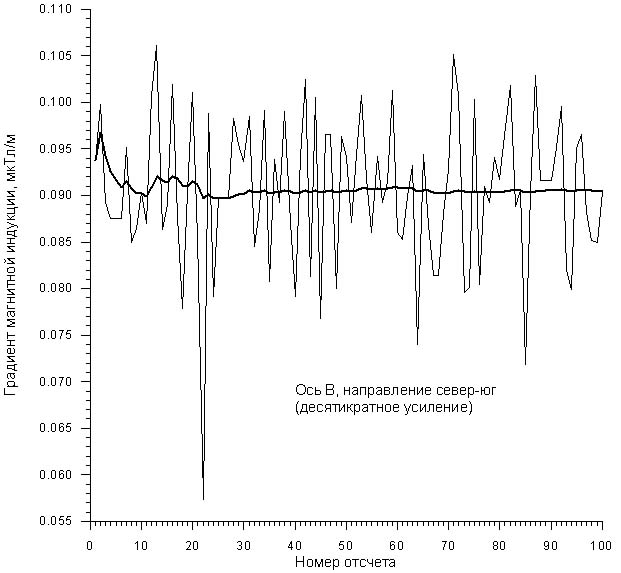
Рис. 2.2.9. Серия измерений градиента магнитной индукции магнитометром-градиентометром с магниторезистивными датчиками HMC1022 [16] при ориентации магниточувствительной оси щупа B в направлении примерно север-юг (усиление в 10 раз). Величина шума от пика до пика примерно 50 нТл. Девиация среднего значения с увеличением числа проведенных отсчетов составляет примерно 5 нТл/м.
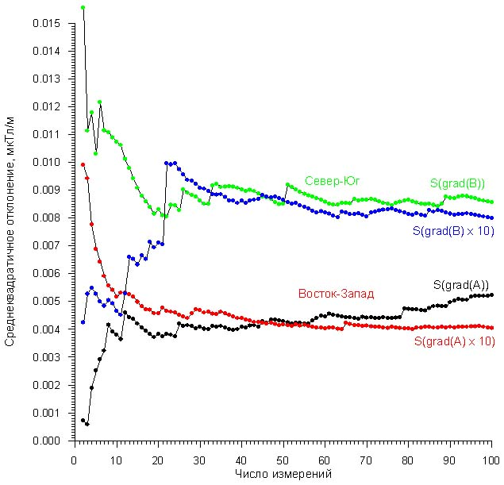
Рис. 2.2.10. Зависимость среднеквадратичного отклонения отсчетов градиента магнитной индукции магнитометра-градиентометра с магниторезистивными датчиками HMC1022 [16] от числа проведенных измерений для разных каналов. Измерялся градиент магнитной индукции, а также градиент после дополнительного десятикратного усиления.
Среднеквадратичное отклонение для компоненты магнитной индукции вдоль магниточувствительной оси датчика с возрастанием числа измерений устанавливаются на уровне примерно 3 нТл (рис. 2.2.4, несколько лучше при ориентации оси датчика поперек силовых линий магнитного поля Земли, т. е. в более слабых полях, и чуть хуже при ориентации оси по полю, когда величина магнитной индукции становится большей). Таким образом, достижимая разрешающая способность магнитометров с датчиком HMC1022 [14, 16] по магнитной индукции при использовании компенсационной схемы измерения находится на уровне 3 ... 4 нТл, что, кстати, более чем вдвое лучше заявленной (8.5 нТл) производителем [4]. Величина шума от пика до пика составляет примерно 15 нТл (рис. 2.2.2, 2.2.3), но, вообще говоря, может быть несколько уменьшена несложными схемными решениями.
Дополнительная обработка сигналов аппаратными средствами (вычисление разности сигналов с помощью прецизионных операционных усилителей, чтобы найти градиент магнитной индукции) ухудшает разрешающую способность прибора до 4 ... 9 нТл (измеряется удвоенная разность двух значений магнитной индукции с разных датчиков) в зависимости от ориентации в поле Земли (рис. 2.2.10). Величина шума от пика до пика при этом составляет примерно 25 нТл для направления восток-запад (рис. 2.2.6, 2.2.7) и примерно 50 нТл для направления север-юг (рис. 2.2.8, 2.2.9).
2.3. Датчик HMC5983
Трехкомпонентный магниторезистивный датчик HMC5983 использован в цифровом микротесламетре [15] (рис. 2.3.1), измеряющим все три компоненты магнитной индукции и дающим расчетное значение ее модуля. Для датчика HMC5983 производителем [4] заявлена внутренняя программная компенсация температурной погрешности магниторезистивного моста. Микротесламетр подключался к компьютеру по интерфейсу USB [10]. Щуп с датчиком помещался в заземленный вместе с корпусом прибора электромагнитный экран из немагнитного материала (рис. 2.3.1). Щуп ориентировался следующим образом: оси X и Y - в горизонтальной плоскости (ось X примерно соответствовала направлению восток-запад, ось Y - север-юг), ось Z - вертикально. Отсчеты производились программным способом, серия составляла примерно 80 отсчетов, временной интервал между отсчетами около 0.5 с (каждый отсчет представляет из себя три компоненты магнитной индукции и ее модуль). Отсчеты записывались в файл. Затем эти данные обрабатывались программно с целью получения усредненных значений и среднеквадратичных отклонений в зависимости от количества отсчетов, начиная с первого. Результаты измерений представлены на рис. 2.3.2 - 2.3.6.
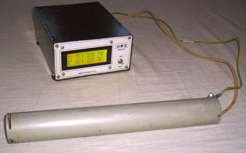
Рис. 2.3.1. Цифровой микротесламетр с трехкомпонентным датчиком HMC5983 [15]. Щуп помещен в заземленный электромагнитный экран.
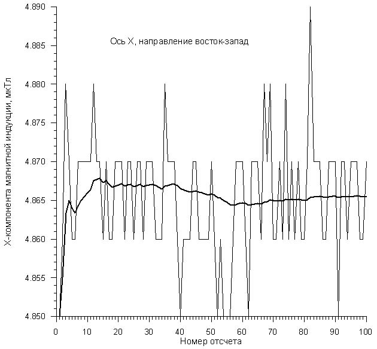
Рис. 2.3.2. Серия измерений магнитной индукции микротесламетром с магниторезистивным датчиком HMC5983 [15] вдоль магниточувствительной оси X. Величина шума от пика до пика примерно 40 нТл. Девиация среднего значения с увеличением числа проведенных отсчетов составляет примерно 20 нТл.
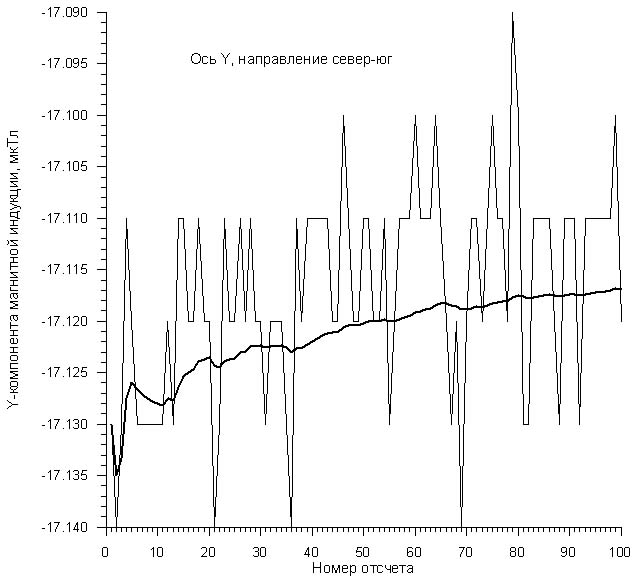
Рис. 2.3.3. Серия измерений магнитной индукции микротесламетром с магниторезистивным датчиком HMC5983 [15] вдоль магниточувствительной оси Y. Величина шума от пика до пика примерно 50 нТл. Девиация среднего значения с увеличением числа проведенных отсчетов составляет примерно 20 нТл.
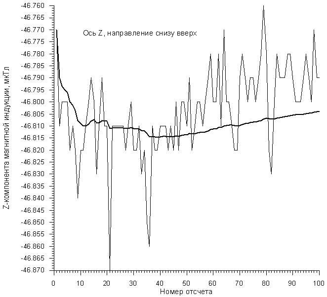
Рис. 2.3.4. Серия измерений магнитной индукции микротесламетром с магниторезистивным датчиком HMC5983 [15] вдоль магниточувствительной оси Z. Величина шума от пика до пика примерно 110 нТл. Девиация среднего значения с увеличением числа проведенных отсчетов составляет примерно 40 нТл.
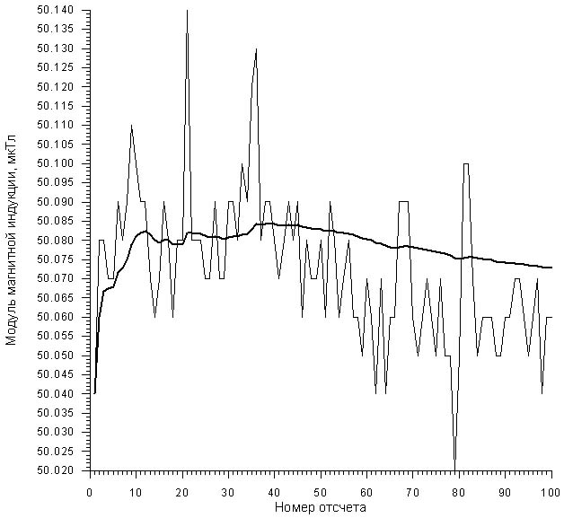
Рис. 2.3.5. Серия измерений модуля магнитной индукции микротесламетром с магниторезистивным датчиком HMC5983 [15]. Величина шума от пика до пика примерно 120 нТл. Девиация среднего значения с увеличением числа проведенных отсчетов составляет примерно 55 нТл.
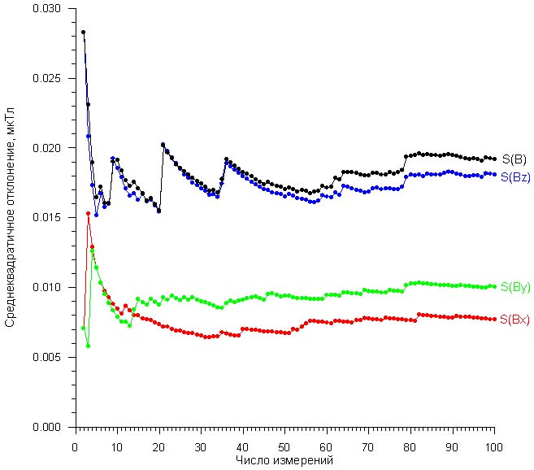
Рис. 2.3.6. Зависимость среднеквадратичного отклонения отсчетов микротесламетра с магниторезистивным датчиком HMC5983 [15] от числа проведенных измерений.
Среднеквадратичные отклонения для x- и y- компоненты магнитной индукции с возрастанием числа измерений устанавливаются на уровне 10 нТл, а для z-компоненты и полного модуля - на уровне 18 нТл. Меньшие значения среднеквадратичных отклонений для x- и y- компонент могут быть объяснены тем, что эти компоненты невелики по абсолютной величине, а направление поля (Земли) имеет в основном вертикальную z-компоненту (по отношению к координатной системе самого датчика, магниточувствительные оси X и Y которого установлены в плоскости, близкой к горизонтальной по отношению к поверхности Земли). По сути получается, что чем больше величина компоненты магнитной индукции, тем больше ее зашумление (этот же вывод можно сделать и для измерений п. 2.2). Таким образом, достижимая разрешающая способность магнитометра с датчиком HMC5983 [15] при проведении измерений в магнитном поле Земли находится на уровне 10 ... 20 нТл. Причем следует заметить, что для получения каждого отсчета, выдаваемого на индикатор прибора и передаваемого в компьютер, производится внутриприборное программно-аппаратное усреднение примерно 2000 измерений магнитной индукции датчиком. Этим, в частности, и обусловливается достаточно быстрая сходимость среднеквадратичной погрешности к конечному значению (рис. 2.3.6). Заявленная производителем [4] разрешающая способность датчика по полю составляет 2 мГс = 200 нТл (среднеквадратичное отклонение для 100 отсчетов), т. е. для 2000 отсчетов можно было ожидать результат не хуже 45 нТл, что вполне соответствует полученным данным. Величина шума от пика до пика составляет 40 ... 120 нТл в зависимости от величины соответствующей составляющей магнитной индукции.
2.4. Датчик QMC5883
Трехкомпонентный датчик QMC5883 использован в магнитометре с передачей данных по радиоканалу 2.4 ГГц [7] (рис. 2.4.1), позволяющем измерять все три компоненты магнитной индукции и рассчитывать ее модуль. Для датчика QMC5883 производителем заявлена внутренняя программная компенсация температурной погрешности магниторезистивного моста и повышенная разрядность собственного аналого-цифрового преобразователя (16 бит). Прибор со встроенным датчиком устанавливался горизонтально таким образом, чтобы магниточувствительные оси X и Y датчика находились в горизонтальной плоскости (ось X - примерно по направлению восток-запад, ось Y - север-юг), а ось Z была ориентирована вертикально. Для связи с компьютером по радиоканалу к разъему USB компьютера подключается соответствующий интерфейс [9] (рис. 2.4.1). Экранирование прибора со встроенным датчиком не производилось, т. к. экран нарушает радиосвязь. Отсчеты с прибора также осуществлялись программным способом (80 ... 90 отсчетов в серии), временной интервал между отсчетами составлял около 1 секунды. Каждый отсчет состоит из четырех чисел - три компоненты магнитной индукции и ее модуль. Файл с отсчетами обрабатывался программно с целью получения усредненных значений и среднеквадратичных отклонений в зависимости от количества отсчетов, начиная с первого. Результаты измерений показаны на рис. 2.4.2 - 2.4.6.
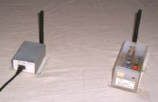
Рис. 2.4.1. Магнитометр с трехкомпонентным датчиком QMC5883 [7], передающий данные по радиоканалу на компьютерный интерфейс [9].
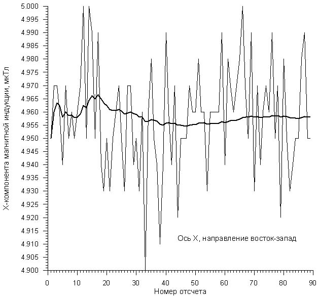
Рис. 2.4.2. Серия измерений магнитной индукции магнитометром с магниторезистивным датчиком QMC5883 [7] вдоль магниточувствительной оси X. Величина шума от пика до пика примерно 100 нТл. Девиация среднего значения с увеличением числа проведенных отсчетов составляет примерно 15 нТл.
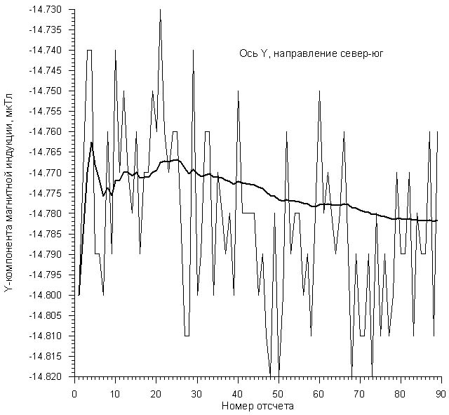
Рис. 2.4.3. Серия измерений магнитной индукции магнитометром с магниторезистивным датчиком QMC5883 [7] вдоль магниточувствительной оси Y. Величина шума от пика до пика примерно 90 нТл. Девиация среднего значения с увеличением числа проведенных отсчетов составляет примерно 35 нТл.
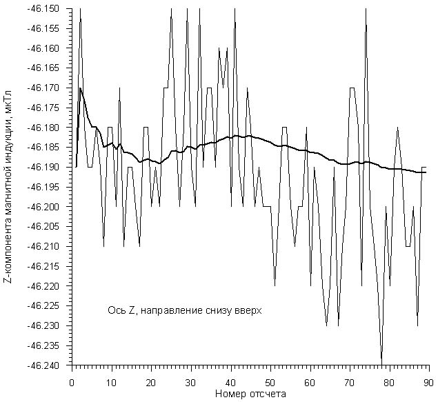
Рис. 2.4.4. Серия измерений магнитной индукции магнитометром с магниторезистивным датчиком QMC5883 [7] вдоль магниточувствительной оси Z. Величина шума от пика до пика примерно 90 нТл. Девиация среднего значения с увеличением числа проведенных отсчетов составляет примерно 20 нТл.
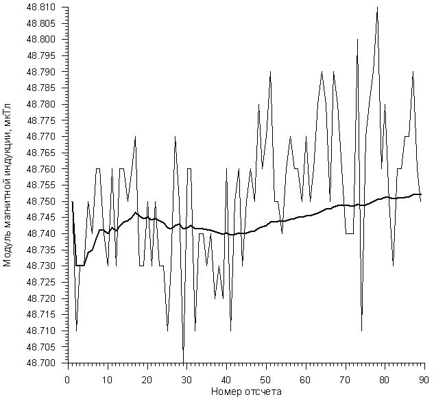
Рис. 2.4.5. Серия измерений модуля магнитной индукции магнитометром с магниторезистивным датчиком QMC5883 [7]. Величина шума от пика до пика примерно 110 нТл. Девиация среднего значения с увеличением числа проведенных отсчетов составляет примерно 20 нТл.
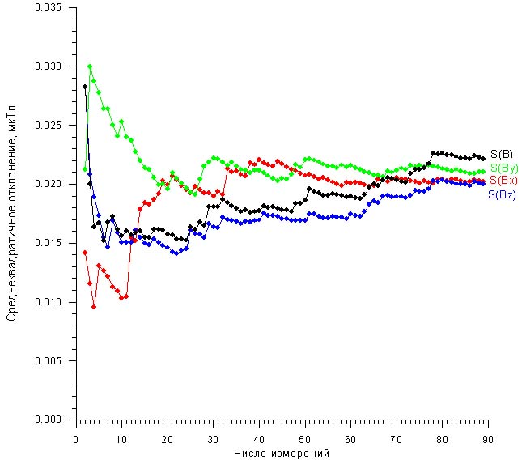
Рис. 2.4.6. Зависимость среднеквадратичного отклонения отсчетов магнитометра с магниторезистивным датчиком QMC5883 [7] от числа проведенных измерений.
Среднеквадратичные отклонения для всех компонент и модуля магнитной индукции устанавливаются на уровне 20 нТл. Таким образом, достижимая разрешающая способность датчика QMC5983 находится на уровне 20 нТл (внутриприборно производится 2000 усреднений для каждого отсчета). Заявленная производителем разрешающая способность датчика по полю составляет 2 мГс = 200 нТл (среднеквадратичное отклонение для 100 отсчетов) и вполне согласуется с результатами измерений. Величина шума от пика до пика составляет 90 ... 110 нТл в зависимости от величины соответствующей компоненты магнитной индукции.
3. Оценка разрешающей способности в процессе близких к реальным измерений
3.1. Методика измерений
Разрешающая способность приборов с АМР-датчиками оценивалась также при измерении изменяющихся во времени с небольшой частотой (доли герца) магнитных полей (фактически, оценивалась возможность достоверно определять сам факт изменения поля). В качестве источника переменного магнитного поля использован постоянный магнит цилиндрической формы с осевой намагниченностью (магнитные полюса на торцах магнита), периодически поворачивающийся на 180 градусов вокруг своей поперечной диаметральной оси. Диаметр магнита 10 мм, высота 10 мм, магнитный материал - неодим-железо-бор (Nd-Fe-B) марки N35 [8] с остаточной индукцией Br = 1.2 Тл. Для измерения девиации магнитной индукции применялись измерительные схемы, показанные на рис. 3.1.1 - 3.1.3. На фоне магнитного поля Земли измерялась девиация аксиальной (осевой) компоненты магнитной индукции на разных расстояниях от центра магнита вдоль его оси или радиуса. Датчик при этом размещался неподвижно в заданной точке таким образом, что его магниточувствительная ось X примерно совпадала с направлением на центр постоянного магнита, а сам магнит устанавливался на заданном расстоянии от датчика и после этого несколько раз периодически (с интервалом примерно 15 секунд) поворачивался вручную на 180 градусов вокруг поперечной (диаметральной) оси таким образом, что его полюса менялись местами, а осевая составляющая магнитной индукции поля самого магнита в точке расположения датчика меняла знак. Отсчеты прибора при этом фиксировались с заданной частотой (обычно 1 ... 2 Гц). Магнитное поле Земли по отношению к датчику имело максимальную компоненту в направлении магниточувствительной оси Z датчика (вертикальная ось) и минимальную - в направлении оси X (направление восток-запад в горизонтальной плоскости).

Рис. 3.1.1. Схема измерений девиации магнитного поля вдоль магниточувствительной оси X АМР-датчика. Генератор переменного магнитного поля - установленный продольно вдоль магниточувствительной оси X АМР-датчика цилиндрический постоянный магнит с осевой намагниченностью, вращающийся вокруг поперечной оси. Магнитное поле Земли создает постоянный магнитный фон (максимум - вдоль оси Z датчика, минимум - вдоль оси X датчика). Направления север-юг, восток-запад соответствуют показаниям компаса.
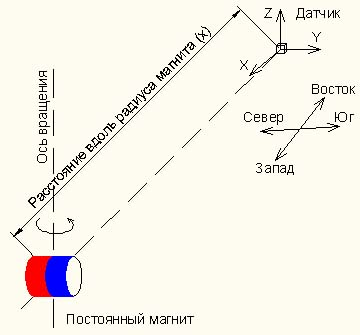
Рис. 3.1.2. Схема измерений девиации магнитного поля вдоль магниточувствительной оси Y АМР-датчика. Генератор переменного магнитного поля - установленный продольно вдоль магниточувствительной оси Y АМР-датчика цилиндрический постоянный магнит с осевой намагниченностью, вращающийся вокруг поперечной оси. Магнитное поле Земли создает постоянный магнитный фон (максимум - вдоль оси Z датчика, минимум - вдоль оси X датчика). Направления север-юг, восток-запад соответствуют по показаниям компаса.
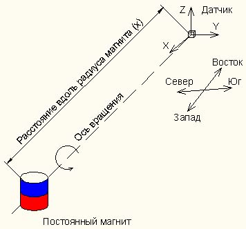
Рис. 3.1.3. Схема измерений девиации магнитного поля вдоль магниточувствительной оси Z АМР-датчика. Генератор переменного магнитного поля - установленный продольно вдоль магниточувствительной оси Z АМР-датчика цилиндрический постоянный магнит с осевой намагниченностью, вращающийся вокруг поперечной оси. Магнитное поле Земли создает постоянный магнитный фон (максимум - вдоль оси Z датчика, минимум - вдоль оси X датчика). Направления север-юг, восток-запад соответствуют показаниям компаса.
Для измерения девиации градиента магнитного поля использованы измерительные, показанные на рис. 3.1.4, 3.1.5. Штанга с датчиками размещалась в горизонтальной плоскости неподвижно таким образом, чтобы магниточувствительная ось A датчиков была примерно параллельна направлению на центр постоянного магнита от центра штанги. Сам магнит устанавливался на заданном расстоянии от центра штанги и после этого несколько раз периодически (с интервалом примерно 15 секунд) поворачивался вручную на 180 градусов вокруг поперечной (диаметральной) оси таким образом, что его полюса менялись местами, а радиальная составляющая магнитной индукции поля самого магнита в точках расположения датчиков меняла знак. Отсчеты прибора при этом фиксировались с заданной частотой (обычно 1 ... 2 Гц). Магнитное поле Земли по отношению к датчикам имело максимальную компоненту в направлении магниточувствительной оси B датчиков (направление север-юг в горизонтальной плоскости) и минимальную - в направлении оси A (направление восток-запад в горизонтальной плоскости).
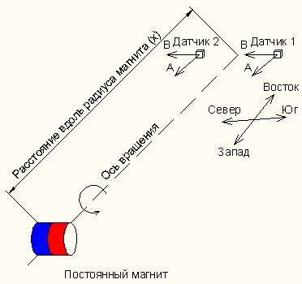
Рис. 3.1.4. Схема измерений девиации градиента магнитного поля вдоль магниточувствительной оси A АМР-датчиков. Генератор переменного магнитного поля - установленный продольно вдоль магниточувствительной оси B АМР-датчиков цилиндрический постоянный магнит с осевой намагниченностью, вращающийся вокруг своей поперечной диаметральной оси. Магнитное поле Земли создает постоянный магнитный фон (максимум в горизонтальной плоскости - вдоль оси B датчиков, минимум - вдоль оси A датчиков). Направления север-юг, восток-запад соответствуют по показаниям компаса.
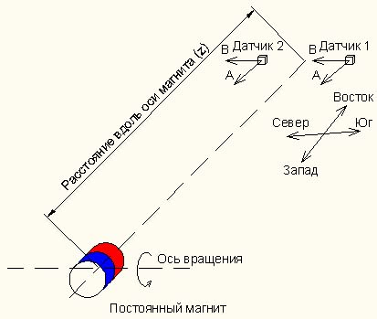
Рис. 3.1.5. Схема измерений девиации градиента магнитного поля вдоль магниточувствительной оси B АМР-датчиков. Генератор переменного магнитного поля - установленный продольно вдоль магниточувствительной оси A АМР-датчиков цилиндрический постоянный магнит с осевой намагниченностью, вращающийся вокруг своей поперечной диаметральной оси. Магнитное поле Земли создает постоянный магнитный фон (максимум в горизонтальной плоскости - вдоль оси B датчиков, минимум - вдоль оси A датчиков). Направления север-юг, восток-запад соответствуют по показаниям компаса.
Для удобства и ускорения построения измерительных схем использован лонжерон длиной несколько более 2.5 м из твердых пород дерева (рис. 3.1.6). Лонжерон может произвольно устанавливаться в выбранном месте. На лонжероне нанесена разметка расстояний (0.0 м, 0.25 м, 0.5 м, 0.75 м, 1.0 м, 1.25 м, 1.5 м, 1.75 м, 2.0 м, 2.25 м, 2.5 м). В точке 0.0 м устанавливается датчик, остальные точки предназначены для установки постоянного магнита на разных расстояниях от датчика. Постоянный магнит для устойчивости размещен в кроватке, которая может крепиться к лонжерону.
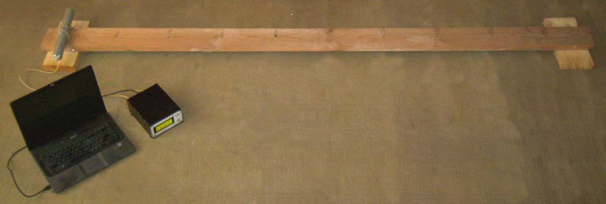
Рис. 3.1.6. Внешний вид измерительной установки : лонжерон, по которому перемещается постоянный магнит, щуп с АМР-датчиком в электромагнитном экране прикреплен в точке 0.0 м лонжерона, цифровой микротесламетр подключен к компьютеру по интерфейсу USB. При проведении измерений компьютер и микротесламетр удаляются от щупа на максимально возможное расстояние для уменьшения магнитной наводки.
Значения магнитной индукции генерируемого цилиндрическим постоянным магнитом поля рассчитывались с помощью программы A_Magnet [1], которая представляет постоянный магнит в виде эквивалентного соленоида (рис. 3.1.7 - 3.1.9). Рассчитанное значение магнитной индукции на торце постоянного магнита (0.5367 Тл) хорошо согласуется с измеренным с помощью тесламетра с датчиком Холла [11] - 0.53 Тл, т. е. заявленная производителем остаточная индукция 1.2 Тл вполне соответствует реальной.
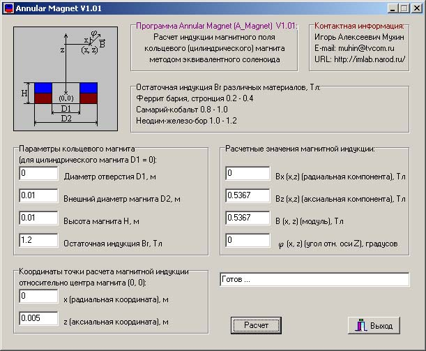
Рис. 3.1.7. Расчет магнитной индукции в центре торца цилиндрического постоянного магнита состава Nd-Fe-B диаметром 10 мм высотой 10 мм (0.5367 Тл) с помощью программы A_Magnet [1].
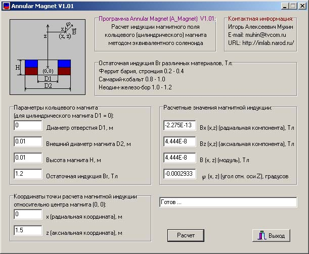
Рис. 3.1.8. Расчет магнитной индукции на расстоянии 1.5 м вдоль оси от центра цилиндрического постоянного магнита состава Nd-Fe-B диаметром 10 мм высотой 10 мм (аксиальная составляющая 44.44 нТл) с помощью программы A_Magnet [1].
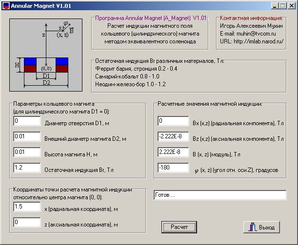
Рис. 3.1.9. Расчет магнитной индукции на расстоянии 1.5 м вдоль радиуса от центра цилиндрического постоянного магнита состава Nd-Fe-B диаметром 10 мм высотой 10 мм (аксиальная составляющая 22.22 нТл) с помощью программы A_Magnet [1].
Результаты расчета магнитной индукции на разных расстояниях от центра постоянного магнита состава Nd-Fe-B (Br = 1.2 Тл) приведены в табл. 3.1.1, 3.1.2 и на рис. 3.1.10.
Таблица 3.1.1. Зависимость аксиальной компоненты магнитной индукции от расстояния до центра цилиндрического магнита диаметром 10 мм высотой 10 мм вдоль оси (для измерительной схемы рис. 3.1.1).
| Расстояние от центра магнита по оси (z), м | 0.5 | 0.75 | 1.0 | 1.25 | 1.5 | 1.75 | 2.0 | 2.25 |
| Магнитная индукция (аксиальная компонента), нТл | 1200 | 355.6 | 150 | 76.8 | 44.44 | 27.99 | 18.75 | 13.17 |
Таблица 3.1.2. Зависимость аксиальной компоненты магнитной индукции от расстояния до центра цилиндрического магнита диаметром 10 мм высотой 10 мм вдоль радиуса (для измерительных схем рис. 3.1.2, 3.1.3).
| Расстояние от центра магнита по радиусу (x), м | 0.5 | 0.75 | 1.0 | 1.25 | 1.5 | 1.75 | 2.0 |
| Магнитная индукция (аксиальная компонента), нТл | 600 | 177.8 | 75 | 38.4 | 22.22 | 13.99 | 9.375 |
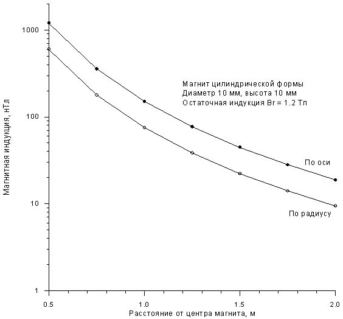
Рис. 3.1.10. Величина аксиальной компоненты магнитной индукции цилиндрического магнита диаметром 10 мм высотой 10 мм в зависимости от расстояния от его центра вдоль оси (z) и вдоль радиуса (x).
Из таблиц 3.1.1, 3.1.2 и рис. 3.1.10 видно, что аксиальная компонента магнитной индукции вдоль радиального направления вдвое меньше магнитной индукции вдоль осевого направления при одном и том же расстоянии до центра магнита.
Результаты расчета градиента радиальной компоненты магнитной индукции на разных расстояниях от центра постоянного магнита состава Nd-Fe-B (Br = 1.2 Тл) приведены в табл. 3.1.3, 3.1.4 и на рис. 3.1.11. Расчет градиента выполнялся для базы 0.5 м, соответствующей расстоянию между датчиками в штанге магнитометра-градиентометра [16].
Таблица 3.1.3. Зависимость градиента радиальной компоненты магнитной индукции от расстояния до центра цилиндрического магнита диаметром 10 мм высотой 10 мм вдоль оси (для измерительной схемы рис. 3.1.4).
| Расстояние от центра магнита по оси (z), м | 0.5 | 0.75 | 1.0 | 1.25 | 1.5 | 1.75 | 2.0 | 2.25 | 2.5 |
| Градиент радиальной компоненты магнитной индукции, нТл/м | 2060.8 | 546.4 | 193.36 | 83.56 | 41.52 | 22.808 | 13.528 | 8.512 | 5.62 |
Таблица 3.1.4. Зависимость градиента радиальной компоненты магнитной индукции от расстояния до центра цилиндрического магнита диаметром 10 мм высотой 10 мм вдоль радиуса (для измерительной схемы рис. 3.1.5).
| Расстояние от центра магнита по радиусу (x), м | 0.5 | 0.75 | 1.0 | 1.25 | 1.5 | 1.75 | 2.0 | 2.25 | 2.5 |
| Градиент радиальной компоненты магнитной индукции, нТл/м | 2060.8 | 546.4 | 193.36 | 83.56 | 41.52 | 22.808 | 13.528 | 8.512 | 5.62 |
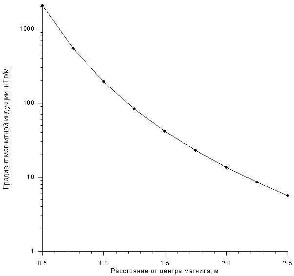
Рис. 3.1.11. Градиент радиальной компоненты магнитной индукции цилиндрического магнита диаметром 10 мм высотой 10 мм в зависимости от расстояния от его центра вдоль оси (z) и вдоль радиуса (x).
Из таблиц 3.1.3, 3.1.4 и рис. 3.1.11 видно, что градиент радиальной компоненты магнитной индукция одинаков вдоль радиального и осевого направления при одном и том же расстоянии до центра магнита.
3.2. Датчик HMC1022
Выход цифрового микротесламетра с датчиком HMC1022 [14] подключался к внешнему вольтметру APPA-107 с разрешающей способностью до 1 мкВ. Разрешение комплекса приборов в пересчете на магнитную индукцию составляло до 1 нТл. Показания записывались в память вольтметра с временным интервалом 1 с. Щуп с датчиком помещался в заземленный вместе с корпусом микротесламетра электромагнитный экран из немагнитного материала. Магниточувствительная ось датчика располагалась в плоскости горизонта либо примерно параллельно оси постоянного магнита (приблизительно вдоль оси X, рис. 3.1.1), что соответствовало ориентации восток-запад (близкое к нулю значение компоненты магнитного поля Земли), либо примерно перпендикулярно оси постоянного магнита (приблизительно вдоль оси Y, рис. 3.1.2), что соответствовало ориентации север-юг (близкое к максимуму значение компоненты магнитного поля Земли в горизонтальной плоскости). Магнитная обстановка в зоне измерений обычная для неэкранированного помещения с сетью переменного тока (напряжение 220 В, частота 50 Гц, мощность до 2.2 кВт), к которой подключены электроприборы, находящимися на удалении более 2-х метров от зоны проведения измерений. Отсчеты записывались в память вольтметра и затем копировались в файл, серия составляла примерно 650 отсчетов, временной интервал между отсчетами 1 с. Результаты измерений представлены на рис. 3.2.1, 3.2.2.
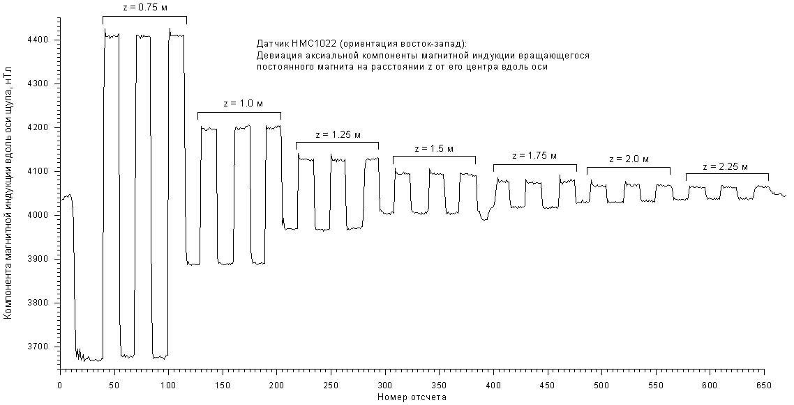
Рис. 3.2.1. Девиация аксиальной компоненты магнитной индукции периодически меняющего ориентацию постоянного магнита, измеренная в точке расположения датчика HMC1022 (компонента вдоль магниточувствительной оси щупа, ориентированного приблизительно по направлению восток-запад) для разных расстояний z между датчиком и магнитом вдоль оси магнита (0.75 м - +355.6 нТл, 1.0 м - +150 нТл, 1.25 м - +76.8 нТл, 1.5 м - +44.44 нТл, 1.75 м - +27.99 нТл, 2.0 м - +18.75 нТл, 2.25 м - +13.17 нТл). Измерительная схема рис. 3.1.1 (магниточувствительная ось датчика соответствует оси X).
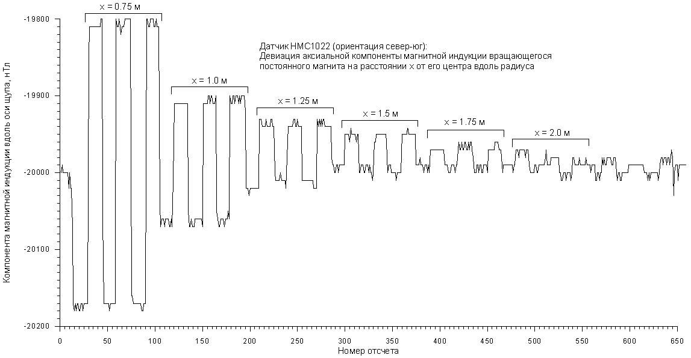
Рис. 3.2.2. Девиация аксиальной компоненты магнитной индукции периодически меняющего ориентацию постоянного магнита, измеренная в точке расположения датчика HMC1022 (компонента вдоль магниточувствительной оси щупа, ориентированного приблизительно по направлению север-юг) для разных расстояний x между датчиком и магнитом вдоль радиуса магнита (0.75 м - +177.8 нТл, 1.0 м - +75 нТл, 1.25 м - +38.4 нТл, 1.5 м - +22.22 нТл, 1.75 м - +13.99 нТл, 2.0 м - +9.375 нТл). Измерительная схема рис. 3.1.2 (магниточувствительная ось датчика соответствует оси Y).
Для пешеходного магнитометра-градиентометра [16] измерялась девиация градиента магнитной индукции.
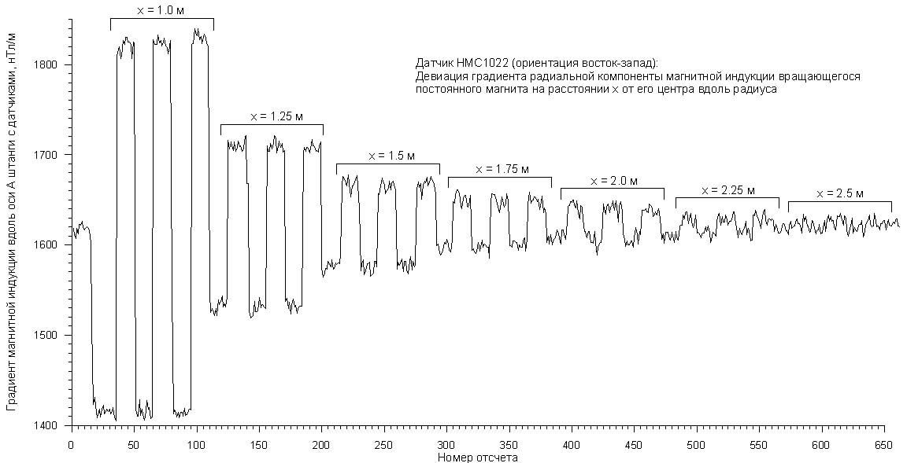
Рис. 3.2.3. Девиация градиента радиальной компоненты магнитной индукции периодически меняющего ориентацию постоянного магнита, измеренная в зоне расположения датчиков HMC1022 (компонента вдоль магниточувствительной оси A штанги, ориентированной приблизительно по направлению восток-запад) для разных расстояний x между штангой с датчиками и магнитом вдоль радиуса магнита (1.0 м - +193.36 нТл/м, 1.25 м - +83.56 нТл/м, 1.5 м - +41.52 нТл/м, 1.75 м - +22.808 нТл/м, 2.0 м - +13.528 нТл/м, 2.25 м - +8.512 нТл/м, 2.5 м - +5.62 нТл/м). Измерительная схема рис. 3.1.4.
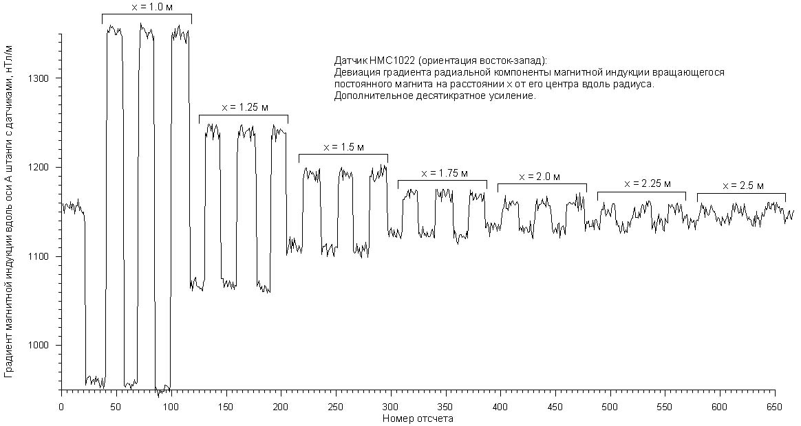
Рис. 3.2.4. Девиация градиента радиальной компоненты магнитной индукции периодически меняющего ориентацию постоянного магнита, измеренная в зоне расположения датчиков HMC1022 (компонента вдоль магниточувствительной оси A штанги, ориентированной приблизительно по направлению восток-запад, дополнительное десятикратное усиление) для разных расстояний x между штангой с датчиками и магнитом вдоль радиуса магнита (1.0 м - +193.36 нТл/м, 1.25 м - +83.56 нТл/м, 1.5 м - +41.52 нТл/м, 1.75 м - +22.808 нТл/м, 2.0 м - +13.528 нТл/м, 2.25 м - +8.512 нТл/м, 2.5 м - +5.62 нТл/м). Измерительная схема рис. 3.1.4.
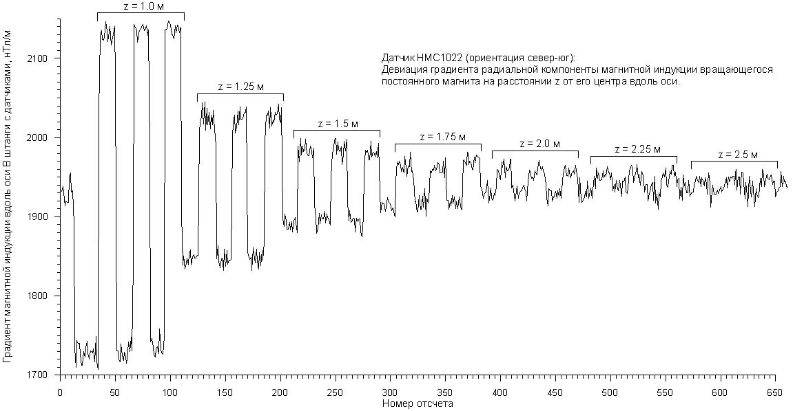
Рис. 3.2.5. Девиация градиента радиальной компоненты магнитной индукции периодически меняющего ориентацию постоянного магнита, измеренная в зоне расположения датчиков HMC1022 (компонента вдоль магниточувствительной оси B штанги, ориентированной приблизительно по направлению север-юг) для разных расстояний z между штангой с датчиками и магнитом вдоль оси магнита (1.0 м - +193.36 нТл/м, 1.25 м - +83.56 нТл/м, 1.5 м - +41.52 нТл/м, 1.75 м - +22.808 нТл/м, 2.0 м - +13.528 нТл/м, 2.25 м - +8.512 нТл/м, 2.5 м - +5.62 нТл/м). Измерительная схема рис. 3.1.5.
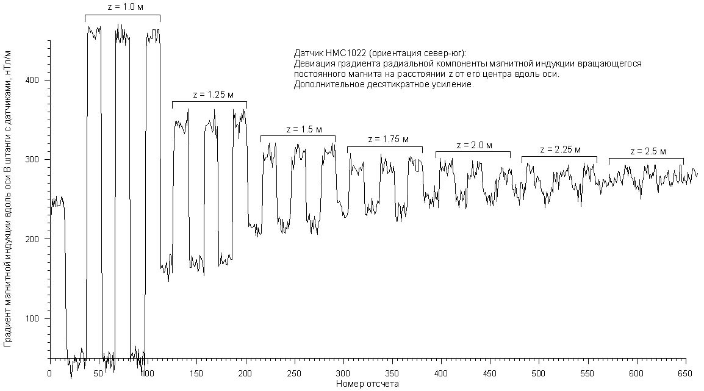
Рис. 3.2.6. Девиация градиента радиальной компоненты магнитной индукции периодически меняющего ориентацию постоянного магнита, измеренная в зоне расположения датчиков HMC1022 (компонента вдоль магниточувствительной оси B штанги, ориентированной приблизительно по направлению север-юг, дополнительное десятикратное усиление) для разных расстояний z между штангой с датчиками и магнитом вдоль оси магнита (1.0 м - +193.36 нТл/м, 1.25 м - +83.56 нТл/м, 1.5 м - +41.52 нТл/м, 1.75 м - +22.808 нТл/м, 2.0 м - +13.528 нТл/м, 2.25 м - +8.512 нТл/м, 2.5 м - +5.62 нТл/м). Измерительная схема рис. 3.1.5.
По рис. 3.2.1 - 3.2.6 можно сделать вывод, что датчик HMC1022, в принципе, позволяет отслеживать изменения магнитной индукции на уровне не хуже 10 нТл (или градиента магнитной индукции не хуже 10 нТл/м). При ориентации датчика в направлении восток-запад разрешающая способность несколько лучше, чем для ориентации север-юг. По-видимому, это связано с тем, что большая по величине компонента индукции магнитного поля Земли имеет более высокий уровень шума.
3.3. Датчик HMC5983
Микротесламетр с датчиком HMC5983 [15] подключался к компьютеру по интерфейсу USB [10]. Щуп с датчиком помещался в заземленный вместе с корпусом прибора электромагнитный экран из немагнитного материала. Магниточувствительная ось X датчика располагалась примерно параллельно оси постоянного магнита (вдоль z-направления, рис. 3.1.1). Величина компоненты магнитного поля Земли была минимальной по оси X датчика, средней по оси Y и максимальной по оси Z. Магнитная обстановка в зоне измерений обычная для неэкранированного помещения с сетью переменного тока (напряжение 220 В, частота 50 Гц, мощность до 2.2 кВт), к которой подключены электроприборы, находящимися на удалении более 2-х метров (аналогично п. 3.2). Отсчеты производились программным способом и записывались в файл, серия составляла примерно 1000 отсчетов, временной интервал между отсчетами около 0.5 с. Результаты измерений представлены на рис. 3.3.1 - 3.3.2.
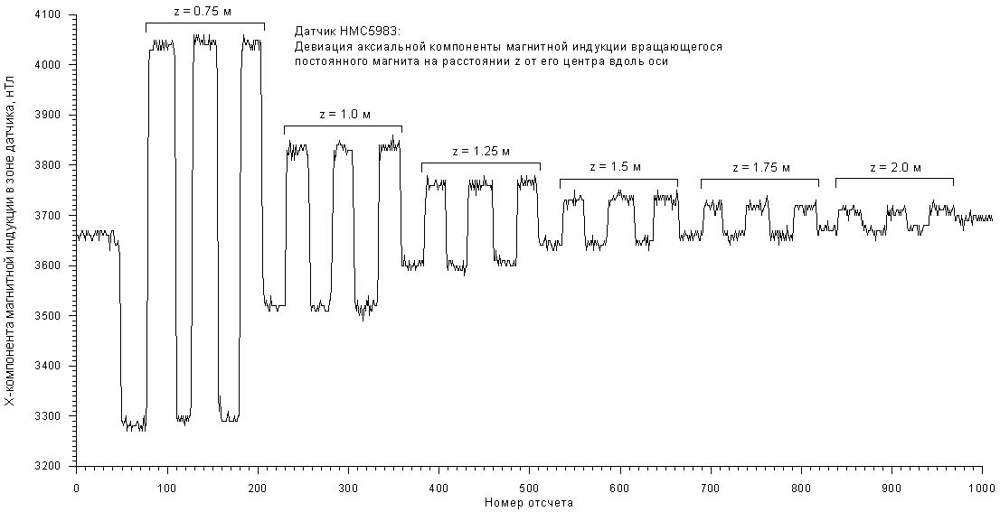
Рис. 3.3.1. Девиация аксиальной компоненты магнитной индукции периодически меняющего ориентацию постоянного магнита, измеренная в точке расположения датчика HMC5983 (X-компонента для датчика) для разных расстояний z между датчиком и магнитом вдоль оси магнита (0.75 м - +355.6 нТл, 1.0 м - +150 нТл, 1.25 м - +76.8 нТл, 1.5 м - +44.44 нТл, 1.75 м - +27.99 нТл, 2.0 м - +18.75 нТл). Измерительная схема рис. 3.1.1.
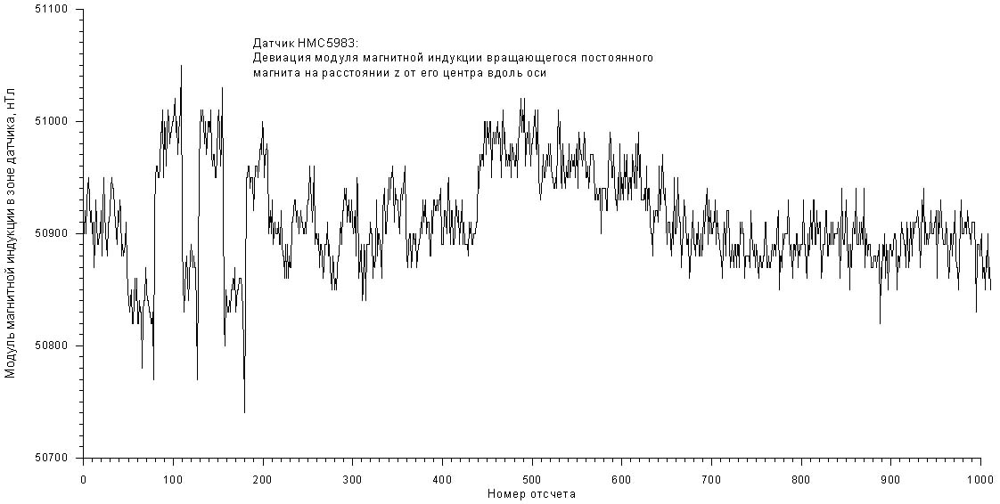
Рис. 3.3.2. Сопутствующая измерениям X-компоненты (рис. 3.3.1) девиация модуля магнитной индукции периодически меняющего ориентацию постоянного магнита, измеренная в точке расположения датчика HMC5983 для разных расстояний z между датчиком и магнитом вдоль оси магнита.
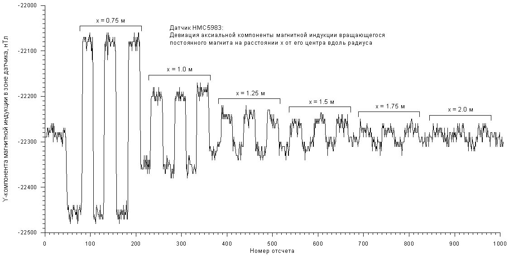
Рис. 3.3.3. Девиация аксиальной компоненты магнитной индукции периодически меняющего ориентацию постоянного магнита, измеренная в точке расположения датчика HMC5983 (Y-компонента для датчика) для разных расстояний x между датчиком и магнитом вдоль радиуса магнита (0.75 м - +177.8 нТл, 1.0 м - +75 нТл, 1.25 м - +38.4 нТл, 1.5 м - +22.22 нТл, 1.75 м - +13.99 нТл, 2.0 м - +9.375 нТл). Измерительная схема рис. 3.1.2.
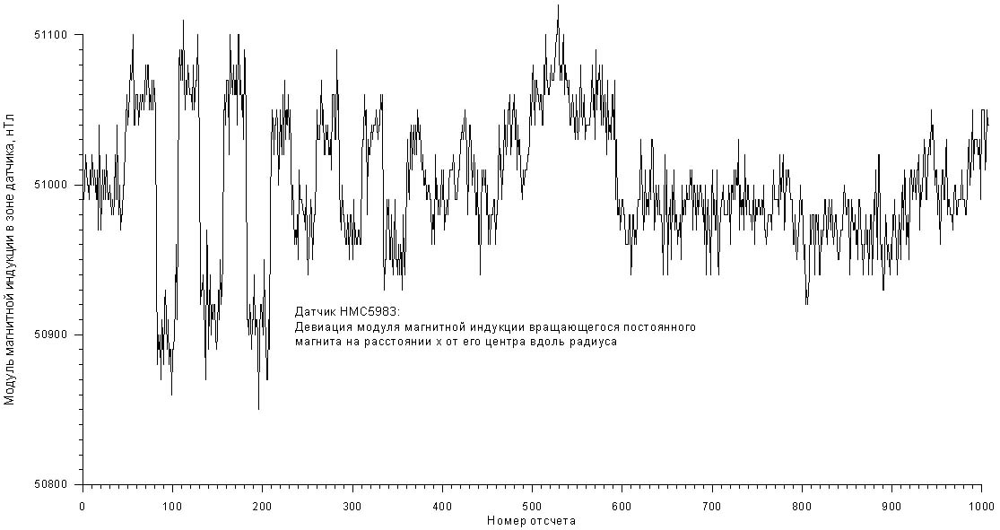
Рис. 3.3.4. Сопутствующая измерениям Y-компоненты (рис. 3.3.3) девиация модуля магнитной индукции периодически меняющего ориентацию постоянного магнита, измеренная в точке расположения датчика HMC5983 для разных расстояний x между датчиком и магнитом вдоль радиуса магнита.
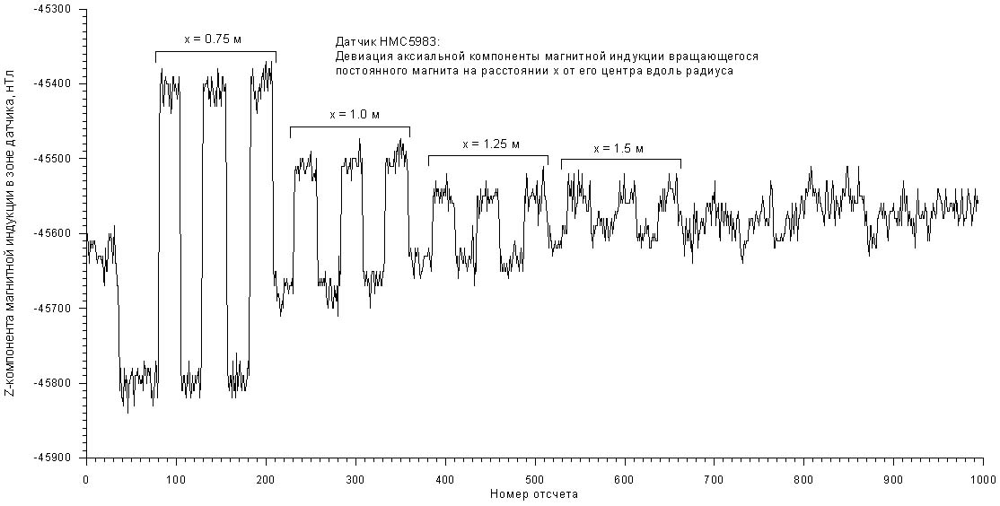
Рис. 3.3.5. Девиация аксиальной компоненты магнитной индукции периодически меняющего ориентацию постоянного магнита, измеренная в точке расположения датчика HMC5983 (Z-компонента для датчика) для разных расстояний x между датчиком и магнитом вдоль радиуса магнита (0.75 м - +177.8 нТл, 1.0 м - +75 нТл, 1.25 м - +38.4 нТл, 1.5 м - +22.22 нТл, 1.75 м - +13.99 нТл, 2.0 м - +9.375 нТл). Измерительная схема рис. 3.1.3.
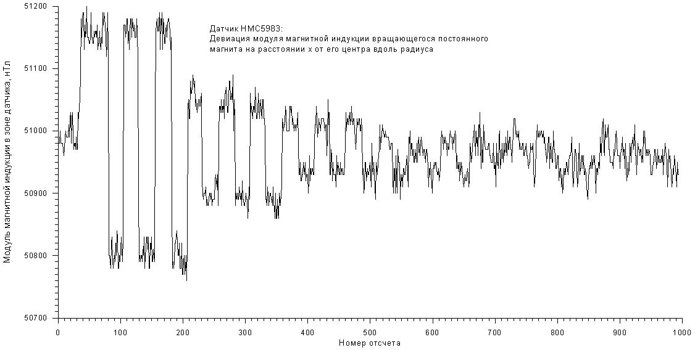
Рис. 3.3.6. Сопутствующая измерениям Z-компоненты (рис. 3.3.5) девиация модуля магнитной индукции периодически меняющего ориентацию постоянного магнита, измеренная в точке расположения датчика HMC5983 для разных расстояний x между датчиком и магнитом вдоль радиуса магнита.
Датчик HMC5983 позволяет отслеживать девиацию отдельной компоненты магнитной индукции примерно +20 нТл, особенно если соответствующая составляющая поля Земли невелика (рис. 3.3.1). Однако для полного модуля индукции разрешающая способность может оказаться почти на порядок хуже (+150 нТл, рис. 3.3.2).
3.4. Датчик QMC5883
Магнитометр с датчиком QMC5883 [7] передает данные по радиоканалу 2.4 ГГц на подключенный к компьютеру соответствующий интерфейс [9]. Прибор со встроенным датчиком устанавливался без экранировки таким образом, что магниточувствительная ось X датчика располагалась приблизительно параллельно оси постоянного магнита (вдоль z-направления, рис. 3.1.1). Магнитная обстановка в зоне измерений обычная, спокойная (см. п. 3.2). Отсчеты с прибора также осуществлялись программным способом (примерно 500 отсчетов в серии), временной интервал между отсчетами составлял около 1 секунды. После записи в файл и последующей его обработки получен результат, представленный на рис. 3.4.1 - 3.4.6.
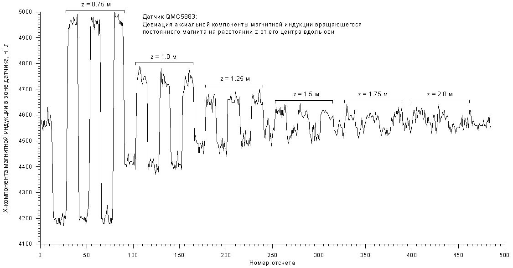
Рис. 3.4.1. Девиация аксиальной компоненты магнитной индукции периодически меняющего ориентацию постоянного магнита, измеренная в точке расположения датчика QMC5883 (X-компонента для датчика) для разных расстояний z между датчиком и магнитом вдоль оси магнита (0.75 м - +355.6 нТл, 1.0 м - +150 нТл, 1.25 м - +76.8 нТл, 1.5 м - +44.44 нТл, 1.75 м - +27.99 нТл, 2.0 м - +18.75 нТл). Измерительная схема рис. 3.1.1.
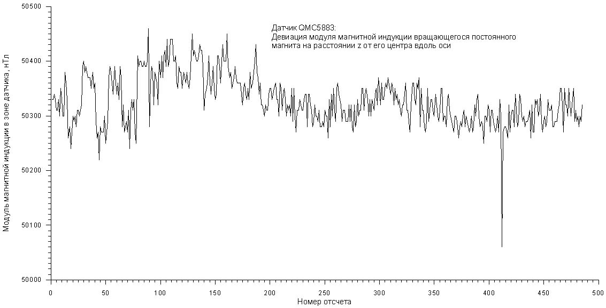
Рис. 3.4.2. Сопутствующая измерениям X-компоненты (рис. 3.4.1) девиация модуля магнитной индукции периодически меняющего ориентацию постоянного магнита, измеренная в точке расположения датчика QMC5883 для разных расстояний z между датчиком и магнитом вдоль оси магнита.
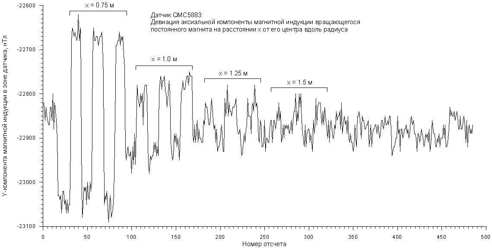
Рис. 3.4.3. Девиация аксиальной компоненты магнитной индукции периодически меняющего ориентацию постоянного магнита, измеренная в точке расположения датчика QMC5883 (Y-компонента для датчика) для разных расстояний x между датчиком и магнитом вдоль радиуса магнита (0.75 м - +177.8 нТл, 1.0 м - +75 нТл, 1.25 м - +38.4 нТл, 1.5 м - +22.22 нТл, 1.75 м - +13.99 нТл, 2.0 м - +9.375 нТл). Измерительная схема рис. 3.1.2.
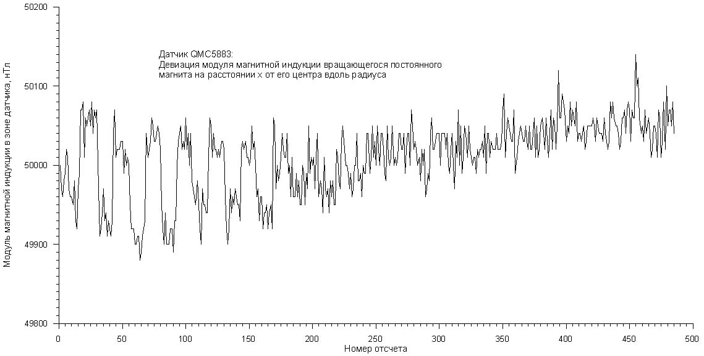
Рис. 3.4.4. Сопутствующая измерениям Y-компоненты (рис. 3.4.3) девиация модуля магнитной индукции периодически меняющего ориентацию постоянного магнита, измеренная в точке расположения датчика QMC5883 для разных расстояний x между датчиком и магнитом вдоль радиуса магнита.
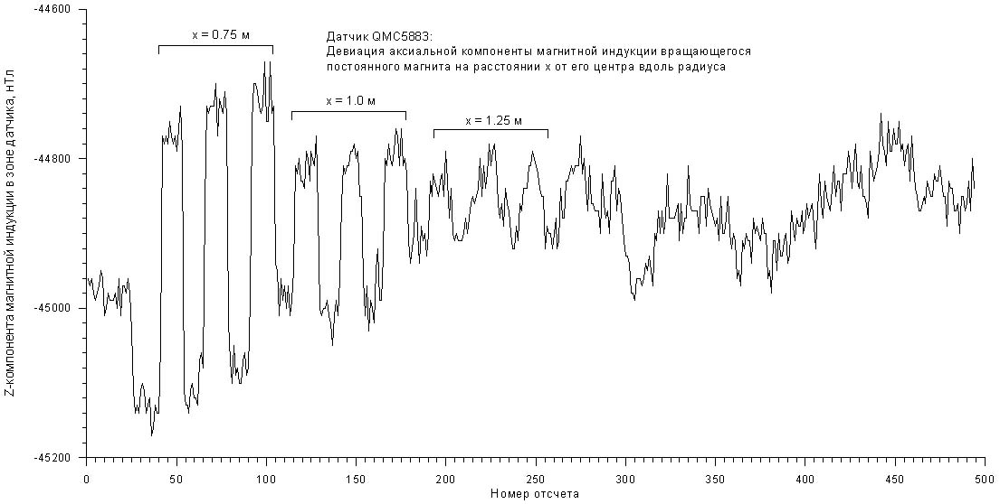
Рис. 3.4.5. Девиация аксиальной компоненты магнитной индукции периодически меняющего ориентацию постоянного магнита, измеренная в точке расположения датчика QMC5883 (Z-компонента для датчика) для разных расстояний x между датчиком и магнитом вдоль радиуса магнита (0.75 м - +177.8 нТл, 1.0 м - +75 нТл, 1.25 м - +38.4 нТл, 1.5 м - +22.22 нТл, 1.75 м - +13.99 нТл, 2.0 м - +9.375 нТл). Измерительная схема рис. 3.1.3.
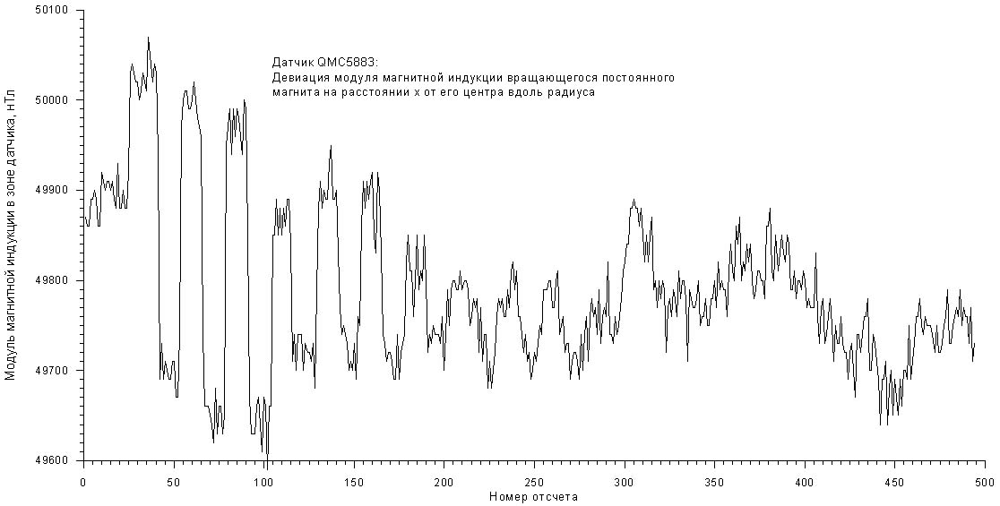
Рис. 3.4.6. Сопутствующая измерениям Z-компоненты (рис. 3.4.5) девиация модуля магнитной индукции периодически меняющего ориентацию постоянного магнита, измеренная в точке расположения датчика QMC5883 для разных расстояний x между датчиком и магнитом вдоль радиуса магнита.
Датчик QMC5883 позволяет отслеживать девиацию отдельной компоненты магнитной индукции примерно +40 нТл, особенно если соответствующая составляющая поля Земли невелика (рис. 3.4.1). Однако для полного модуля индукции разрешающая способность может оказаться почти на порядок хуже (рис. 3.4.2).
4. Выводы
1. Разрешающая способность приборов с компенсационной схемой измерения в силу температурной и временной стабильности существенно выше, чем прямые отсчеты сигнала магниторезистивного моста, и находится на уровне не хуже 10 нТл, что соответствует литературным данным [2, 5]. Разрешающая способность приборов, использующих прямой отсчет сигнала магниторезистивного моста при условии его температурной стабильности, может достигать 20 ... 40 нТл при использовании многократного (тысячи раз) усреднения.
2. Разрешение цифровых шкал приборов 0.1 мкТл = 100 нТл является вполне обоснованным выбором, т. к. при этом показания приборов в постоянном магнитном поле стабильны и легко считываются визуально. Для увеличения разрешающей способности до уровня 10 нТл можно при необходимости использовать внешний аналоговый или цифровой выход приборов.
3. Хорошая сходимость среднеквадратичного отклонения для результатов, полученных с помощью приборов на основе датчиков HMC5983, QMC5883, обусловлена в первую очередь тем, что измерительный алгоритм осуществляет порядка 2000 усреднений на каждый результат, выдаваемый один раз в полсекунды.
4. Паспортные значения разрешающей способности датчика HMC1022 (85 мкГс = 8.5 нТл) и датчиков HMC5983 и QMC5883 (200 нТл для 100 отсчетов) примерно соответствуют полученным результатам среднеквадратичных отклонений для построенных на их основе приборов.
5. Вряд ли возможно достаточно простыми средствами существенно улучшить разрешающую способность рассмотренных магниторезистивных датчиков ниже уровня 10 нТл, который также соответствует и литературным данным [2, 5]. Поэтому попытки измерить изменения магнитной индукции ниже порога 10 нТл вполне могут оказаться нецелесообразными.
6. В соответствии с расчетами по программе A_Magnet [1] и проведенными измерениями магнитная индукция постоянного магнита состава неодим-железо-бор (остаточная индукция 1.2 Тл) цилиндрической формы диаметром 10 мм высотой 10 мм, намагниченного по оси, составляет примерно 20 нТл на расстоянии 2 м по оси или 1.5 м по радиусу. Собственно, это примерно и будет предельным расстоянием, на котором подобный магнит может быть обнаружен магниторезистивным датчиком на фоне магнитного поля Земли, причем об этом событии следует скорее говорить, как о теоретически возможном, нежели реально осуществимом. Поиск же с помощью данных датчиков ферромагнитных объектов аналогичной габаритности или тем более некрупных дефектов в ферромагнитных объектах, что довольно часто декларируется, в частности, по отношению к трубопроводам [12], пока можно отнести в большей степени к несбыточным грезам.
Соотношения между единицами измерения магнитной индукции (Тл - Тесла, Гс - Гаусс):
Ссылки:
18.06.2018
Альтернативные источники
энергии
Компьютеры и
Интернет
Магнитные поля
Механотронные системы
Перспективные
разработки
Электроника и
технология